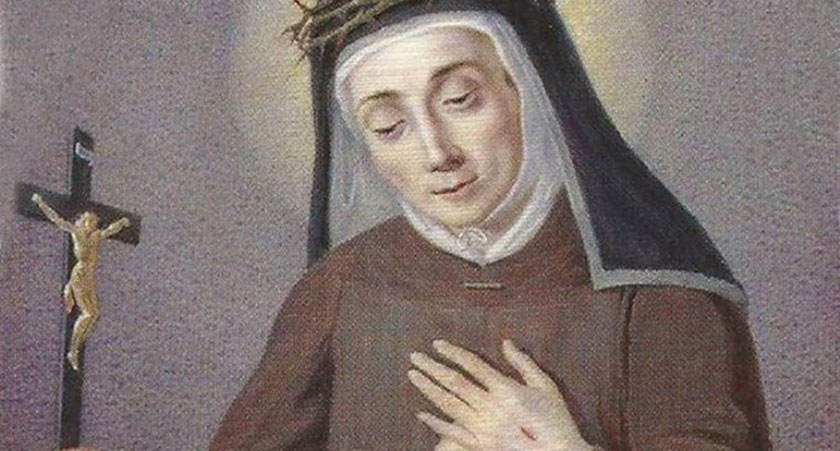

"SANTA MARIA FRANCISCA DAS CINCO CHAGAS DE JESUS"



“SANTA MARIA FRANCISCA AFIRMAVA: Todo cristão é obrigado a crer e a obedecer cegamente a tudo o que a Santa Igreja ensina. E ninguém deve esquecer a obediência e submissão ao Sumo Pontífice. SIM, PORQUE ESTA É A VONTADE DA SANTÍSSIMA TRINDADE”.
=ÌNDICE=
 - "ANJO DA GUARDA,
PRECIOSO TUTOR"
- "ANJO DA GUARDA,
PRECIOSO TUTOR"


 -
-